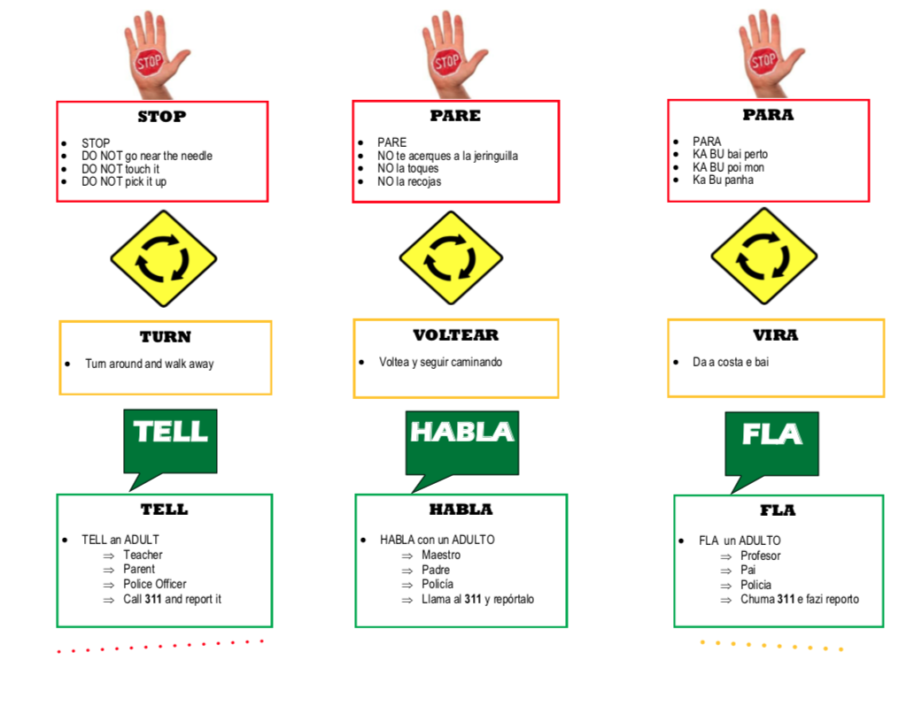

On a cool October morning, two men crouch down near a chain link fence along Melnea Cass Boulevard and
make a deal. One
of the men, younger, perhaps in his late 20s, rolls up the left sleeve of his fleece coat while the
other thumbs through
a handful of cash before stuffing it into his jacket pocket. Cars bustle past along the street.
About a dozen yards away, Domingos Darosa, a Roxbury native and community activist, walks through the
grass between the
sidewalk and the fence, his eyes scanning the ground for hypodermic needles. He’s wearing steel-toed
boots and white
latex gloves, and he carries a small red box with a clear plastic lid with an opening to drop the
needles through. He
picks up 10 needles in the first minute he’s there.
The younger man, his head covered by a New England Patriots beanie, gets ready to shoot up nearby, and
the other stands
up and looks around. Darosa approaches, following the trail of needles as he picks them up one by one.
“Be careful, guys,” Darosa says to the men as he picks up a plastic water bottle filled with used
syringes.
“There’s a bad batch going around.”
The older man nods and reaches into his pockets. Darosa knows the drill: he walks closer and holds open
the red box as
the man drops two needles inside.
This is all routine for Darosa and others in the community trying to keep as many needles off the ground
as they can.
They walk through city parks and playgrounds, under overpasses and along sidewalks, picking up what they
see and
emptying their full boxes into red kiosks scattered across the area for needles to be safely deposited.
Darosa said he noticed a problem with discarded needles about eight years ago. Since then, he said, the
issue has
skyrocketed.
311 data from the city of Boston corroborates this, showing that the number of requests for needle
pick-ups has steadily
increased over the past five years –– now totalling over 17,000. The needles are but a quantifier of a
bigger problem, a
numerable proxy for the larger topic at hand: the nation’s opioid crisis.
Darosa continues on his way, picking up more needles. Some are hidden beneath leaves that have fallen
from the tree
branches overhead. Others have the needle either bent or broken off, a sign of a conscious effort made
by people
suffering from drug addiction, Darosa says, to mitigate the spread of disease.
He also picks up empty Narcan dispensers, the medication used to treat narcotic overdoses.
“Any time you see these,” Darosa says, “that means someone was brought back to life.”
Residents Respond
Aside from Darosa, other Boston residents have also started taking matters into their own hands. Andrew
Brand, a computer
professional and South End resident who lives along Massachusetts Avenue, has started exploring the 311
data on his own
in an attempt to make sense of the issue.
Brand said his interest in the needle collection data began as a way for him to practice creating
graphics and studying
the opioid crisis. Brand sought hard data, rather than anecdotal evidence, to show that the opioid
epidemic was
heightened in Roxbury and the South End.
The 311 requests for needle collection show what Brand expected to be true –– that there is a higher
concentration of
calls coming from those two neighborhoods than elsewhere.
Each dot represents a 311 needle pickup request, and the dark red dots represent higher density of requests.
The data itself has its limitations, though, Brand said.
To begin with, the needles are only one quantifiable dimension of the real problem at hand: the opioid
crisis. Further,
the data doesn’t show how many used needles are actually on the streets –– it only reflects the calls made
to request
their removal.
“The needles are really one aspect of the problem. They’re the only (quantifiable) aspect of the problem
that I have
access to,” Brand said. “Really, I want the neighborhood to be cleaned up and go back to the way it was,
which was sort
of a normal neighborhood, albeit one next to the hospitals. It always had its share of homeless people, but
they didn’t
really cause any quality of life problems for the neighborhood.”
Brand isn’t the only Boston resident who’s had enough.
Jennifer, another South End resident, had her first close call with used needles in the spring of
2018. While
playing with her son in Southwest Corridor Park, she noticed him bending towards something. As he went to
grab it, she
recognized the tell-tale clear syringe and pulled him away before he could pick up the used needle.
Though that was the only needle her now 3-year-old has nearly gotten ahold of, Jennifer said she sees
discarded syringes
around Boston, and in parks and playgrounds, on a weekly basis.
The problem has become so severe that she now chooses to keep her son in indoor play areas, or takes him
to museums or
suburban parks. She has even started exploring possible solutions for the community at large to deal
with discarded
needles and the effects of the opioid crisis.
“I’m just a mom. I’m not an opioid expert, but clearly, the city is looking for solutions,” Jennifer said.
“No one knows
what to do, so I do have a list of things.”
Among her ideas for possible solutions are distributing retractable needles rather than standard
syringes, and making
them brightly colored so pedestrians can easily spot them and dispose of them.
After the incident with her son, Jennifer called the Boston Public Health Commission’s needle exchange, and
was unsettled
to find that they are not exchanging needles, but rather, distributing them without requiring an
exchange. As long as
they are giving out syringes, she said, they might as well be making them easier for the general public
to identify and
discard.
As a first-time parent, Jennifer said she worries during the day that her son will be stuck by a needle
while playing. At
night, she worries that her husband, a surgeon at Boston Medical Center on Massachusetts Avenue –– part
of an area
otherwise known as the Methadone Mile –– isn’t safe when he leaves work.
To Jennifer's family, the side effects of the opioid crisis have become too much to sustain. They are
now actively
seeking to relocate outside of Boston.
“The city is being taken over,” Jennifer said. “If you were to have asked me four years ago if I wanted to
raise my son in
the city, I would say 100%. I love the city, I’m an extroverted person, I enjoy community, but now we’re
actively
looking to get out of the city for the sole reason of the drug-using community … It’s just too much at
this point.”
“I’m just a mom. I’m not an opioid expert,but clearly, the city is
looking for solutions.”
In October 2014, the bridge to the
Long Island Recovery Campus
was closed and torn down due to safety
concerns. For
years, the campus was a place where people struggling with addiction could go for shelter and recovery
services.
In the years since that access was cut off, community members in Roxbury and the South End have noticed
a growing
presence of drug abuse in their neighborhoods, along with more needles littering the ground.
But service providers, those who stand on the frontline of this issue as they try to help people
suffering from
addiction every day, say this epidemic isn’t anything new.
“It’s new to people who weren’t really paying attention to the problem at the time, and now that it’s
all here in one
spot, you can’t not pay attention to it,” said Mario Chaparo, program director for the engagement center
and outreach
services at the Boston Public Health Commission.
“When it’s somebody that they know or somebody that they’re really close to, then they understand and
they might ask
‘How can I help them?’ It’s sad to say, but most times it has to touch somebody in their own life for
them to get it and
realize we need to do something more.”
One of BPHC’s main priorities is mitigating the spread of disease that can occur when people share and
reuse needles. To
combat this issue, the department gives out clean needles, as well as other items such as sterile wipes,
toothpaste,
soap and feminine hygiene products. While the program is called a needle exchange, people can still get
clean needles
without turning in used ones.
‘I would give out as many needles as someone needs for them to not get a disease.’
Some have criticized this strategy, arguing that the program is only putting more needles out into the
community. But
Chaparo says the department collects more syringes –– whether they are turned in or picked up off the
ground –– than it
hands out. He estimated that his team collects some 200 to 250 needles every day.
“I would give out as many needles as someone needs for them to not get a disease,” he said. “Anywhere
that someone is
dropping a needle, of course (we’re concerned) if someone gets stuck. But when we think about the bigger
picture –– you
know, I just heard on the news about a new strain of HIV. There’s new strains of Hepatitis C, there’s
all these new
things that have come in. I’d rather keep giving out needles to lessen that harm.”
Chaparo said his department also distributes small containers for people to place their used syringes
in,
like the red
box Domingos carries with him when he’s collecting needles off the ground. When the box fills up, it is
turned in to the
department in exchange for more clean needles
Another strategy has been the placement of large red kiosks around the city for depositing needles
safely.
This move has
also drawn criticism, particularly with two kiosks placed near the Orchard Gardens K-8 School, which
sits a
short walk
from the intersection of Melnea Cass Boulevard and Massachusetts Avenue, part of the area known as
Methadone
Mile.
Jennifer, for one, said the kiosks aren’t the answer –– especially not when placed in front of
schools.
“Putting something like that next to a school, that’s not the solution,” Jennifer said. “It’s like saying a
person who’s
drunk is going to pick up all their stuff. They’re just not in the frame of mind.”
‘We’ve always been here’
The Orchard Gardens School has been dealing with the issue of littered needles for at least the past
four
years. In
2015, school nurse Sue Burchill designed a brochure to hand out to students in the K-8 school explaining
what to do when
they see a needle on the ground.
“You learn to stop, drop and roll in school when there’s a fire,” she said in a recent interview. “Our
brochure says ‘If
you see a needle, stop, turn and tell an adult. If there’s no adults, call 311.’”
The key point is for children to not pick up the needle themselves, but Burchill said she believes the
kiosks encourage
students to do precisely that.
The brochure is written in three languages. The school has nearly 1,000 children, she said, and about
75%
are learning
English as a second language.

“We started the brochure and have been educating the students since 2015,” said Burchill, a lifelong
Boston resident.
“It’s 2019. We’ve gone to the mayor, we’ve gone to representatives in the neighborhood, we’ve
stood
outside on the
sidewalk on Melnea Cass and Albany (Street) with signs. Nobody seemed to care until the South
End community, the wealthy
physicians and such, as needles started coming their way, that’s when they started paying attention.
That was in 2017.”
“We don’t really have a voice,” she later added. “We are here, and we’ve always been here.”
“We don’t really have a voice”
311 data shows a high concentration of calls for needle pickups coming from the area surrounding the
school. Custodians walk the school
grounds
each morning
checking for needles and other drug-related litter before students arrive, Burchill said.
One day last fall, she said several hundred pill capsules were discovered on the kindergarten
playground. In
November
2018,
a
boy was pricked by a needle during recess. Burchill said he had to undergo testing to rule out
any
infections
and is okay.